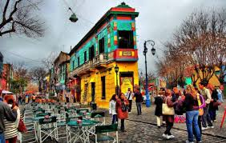

Hoteles
"Conoce la maravillosa oferta hotelera que tiene Buenos Aires"
Donde ir?
"Buenos Aires tiene millones de actividades para hacer de dia y de noche.Algunas tambien son gratuitas"
Restaurante y bares
"Conoce la infinidad de propuestas gastronomicas que presenta Buenos Aires en cada uno de su barrios"
Futbol,una parte de Argentina
De deporte colectivo a religión elegida, el fútbol se juega con los pies y se vive con el corazón. Retrato de una pasión indeclinable.
Puerto Madero
Puerto Madero es un área renovada cercana al muelle. Sus edificios reconvertidos de ladrillos rojos contienen restaurantes de carnes de lujo populares entre los turistas y los que están de almuerzo de negocios. Elegantes rascacielos albergan corporaciones multinacionales y departamentos de alto valor. Los senderos recorren varios lagos en la rica Reserva Ecológica Costanera Sur, que atrae a familias y corredores. El Puente de la Mujer es un elegante puente colgante que cruza el muelle.
La Boca
Por sus comercios brillantes y coloridos, sus museos modernos, el arte callejero, los shows de tango y el fútbol, La Boca es un barrio que no puedes dejar de visitar en Buenos Aires. El distrito portuario de La Boca es una de las zonas más antiguas y emblemáticas de Buenos Aires. Su historia colorida se preserva en “Caminito”, una calle empedrada con una multitud de casas, cafés, galerías y tiendas de souvenirs. Observa las grandes figuras que representan a los habitantes del lugar, inclinándose sobre los balcones de hierro forjado. Admira a los bailarines de tango y artistas callejeros, y visita el lugar donde surgieron algunos de los mejores jugadores de fútbol del país. El estilo propio de La Boca data del siglo XIX, cuando los inmigrantes de clase obrera se asentaron en los “conventillos”
Centro
Ver mapa Visitá Centro Actividades Hoteles Dónde hospedarse Guía de viaje de Buenos Aires Esta área desempeña múltiples funciones en Buenos Aires. Es tanto un distrito financiero como un centro político y, a la vez, un centro turístico y un área de compras. El área del Centro abarca varios barrios de Buenos Aires. El distrito céntrico y comercial se encuentra al noroeste la Plaza San Martín y Retiro, al norte y el puerto, al este y el noreste. Justo en el centro, encontrarás el punto donde converge la política en Argentina: la Plaza de Mayo. En esta área abundan los edificios históricos y, si buscas un poco más, los mejores restaurantes y centros de compras de la ciudad.